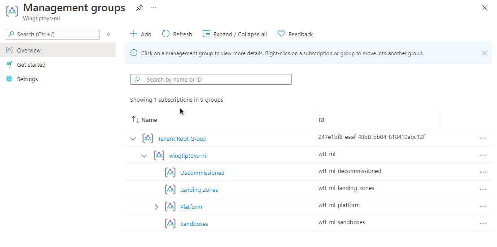
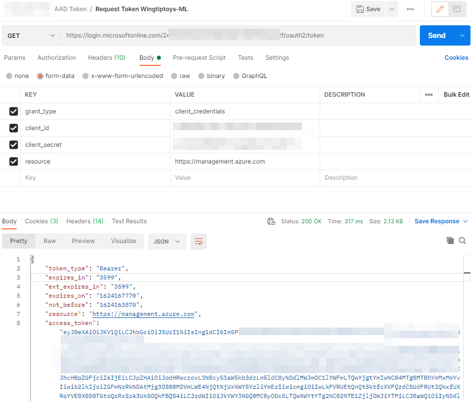
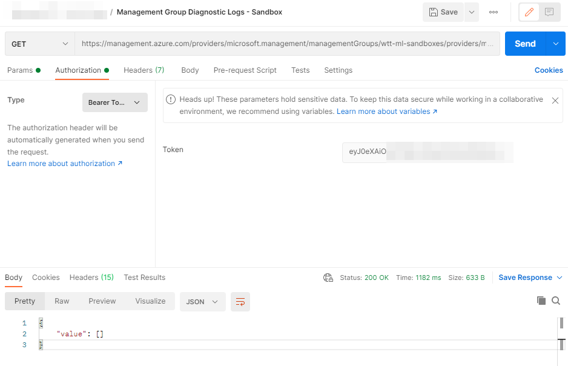
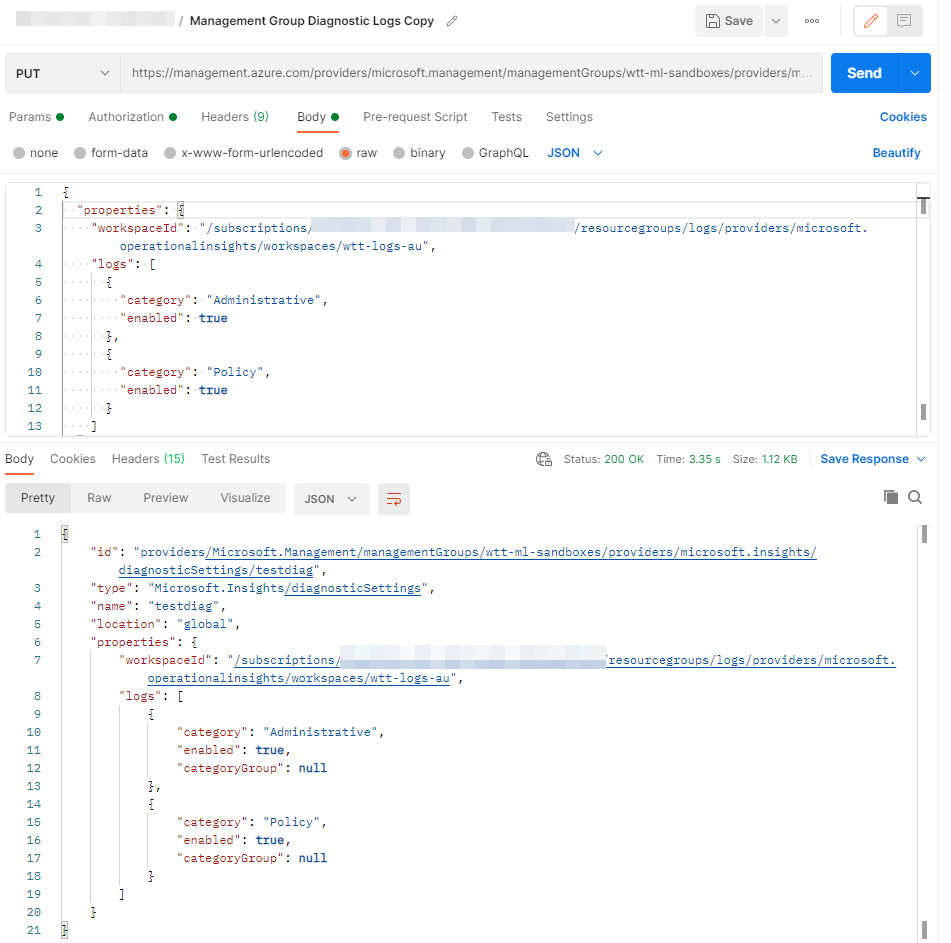
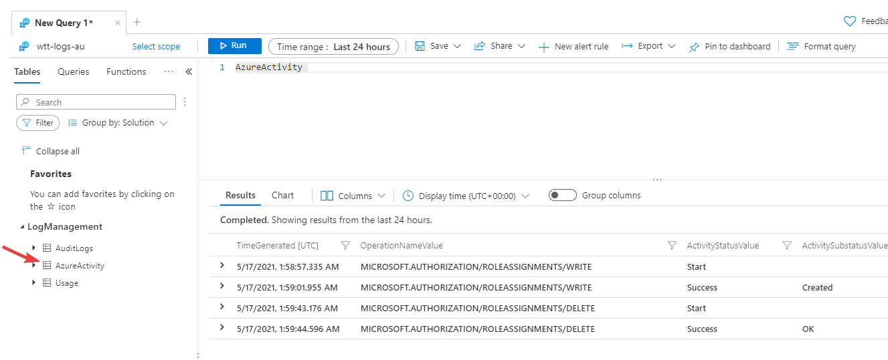
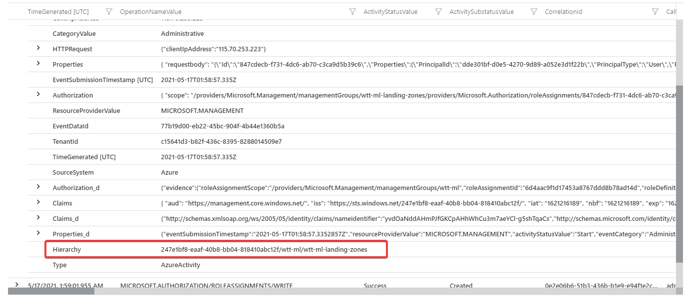

This blog post shows you how to forward your Azure Management Group Activity logs to Azure Monitor or any SIEM product that you have in your environment. There is a known limitation that this cannot be configured in the Azure Portal. It needs to be enabled using the backed API and this post will provide the necessary details for it. This is important for some Azure Customers as Management Groups defines the organizations top level governances, including Azure Policy and Access Management.
Problem Statement
As of today (20/06/2021), Azure Portal does not allow you to configure Diagnostic settings at the management group level. If you go to Diagnostic settings at the management groups, it takes you to a page where it asks again for a resource to configure diagnostic settings on – see below animation.

Not that you don’t get a place to configure diagnostic setting for management groups. This is a known limitation. You can see the activity logs on the Azure Portal for Management groups if you go to the Activity Logs pane on a management group; however, you cannot forward them to Azure Monitor nor any SIEM project. This is a problem for some customers, as they want to use Azure Monitor to monitor the entire cloud landscape rather than browsing through different locations. Furthermore, some customers want to query a single log analytics workspace for platform level analytics. The only way to do that is to forward all the logs to the Azure Monitor. Without wasting anymore time, lets look how it can be done.
Solution
The good news is - there is a way that this can be achieved. The diagnostic settings at the management group level can only be enabled and configured via the APIs at this time. The API is available in the following location.
https://docs.microsoft.com/en-us/rest/api/monitor/managementgroupdiagnosticsettings/createorupdate
With this API you can configure diagnostic settings on the management groups. Diagnostic settings allow you to configure forwarding rule for activity logs to 3 locations, consistent with any other resource type in Azure. They are as below.
- Log analytics workspace
- Storage account
- Event Hubs.
Before you call this API, you will need to have a valid bearer token acquired through the Azure AD. If you are unfamiliar with the process on calling the Azure API’s. This API documentation is a good place to start. There are certain pre-requisites items such as creating a service principal and assigning permissions that needs to occur, this is detailed in the documentation along with a youtube video.
I used Postman as the tool to call the above API. Following are some of the details of the API calls I made to set this diagnostic settings
Get the Bearer Token
I used the following API to get the Bearer token from the Azure AD.
1 | https://login.microsoftonline.com/<tenant id>/oauth2/token |
The request and the response screenshot in Postman is below.

List the Existing Diagnostic Settings on a Given Management Group.
I used the following API to list the existing diagnostic configuration on the management group.
1 | https://management.azure.com/providers/microsoft.management/managementGroups/wtt-ml-sandboxes/providers/microsoft.insights/diagnosticSettings?api-version=2020-01-01-preview |
The request and response of the GET call in Postman looks like below.

Configure a Diagnostic Setting to send logs to a Log Analytics workspace.
I used the following API to update the diagnostic configuration on the management group wtt-ml-sandboxes.
1 | https://management.azure.com/providers/microsoft.management/managementGroups/wtt-ml-sandboxes/providers/microsoft.insights/diagnosticSettings/testdiag?api-version=2020-01-01-preview |
The request and response of the PUT call in Postman looks like below.

This is all you need to configure the diagnostic settings on the management group. The configuration takes 5-10 minutes for logs to appear in the log analytics workspace. If you go to the Log analytics workspace, you will see the data getting logged in the same AzureActivity Logs table.

The log format is as below.

You can use this table and the data in any Log Analytics query that you want to formulate.